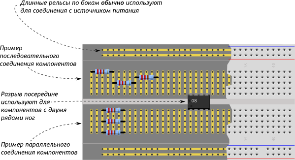
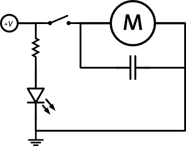
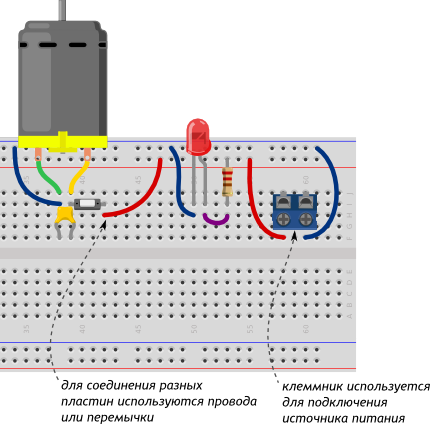

Для надёжной сборки устройств создаются индивидуальные печатные платы. Если делать их самостоятельно, это займёт много времени и заставит повозиться с химикатами и паяльником. Индивидуальные платы с промышленным монтажом на заказ крайне дороги при малом тираже.
Для быстрой сборки электрических схем без пайки и без проблем существует макетная плата. Её же называют макетной доской, макеткой или breadboard’ом.
Под слоем пластика скрываются медные пластины-рельсы, выложенные по незамысловатому принципу:

Одну и ту же схему на макетной доске можно собрать множеством способов. Пример одной из конфигураций разберём для такой схемы:

На макетной доске её физическое воплощение может быть сделано таким способом:

На что стоит обратить внимание: